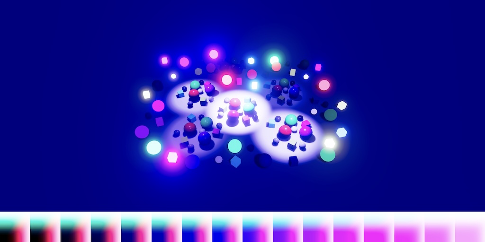
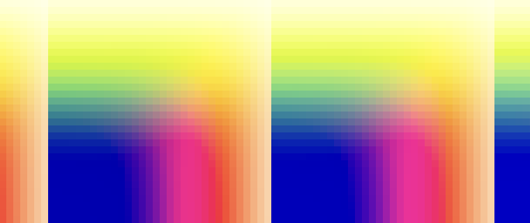

Custom SRP 6.2.0
3D Color LUT

This tutorial is made with Unity 6000.3.11f1 and follows Custom SRP 6.1.0.
Compute Shader
In the previous tutorial we added a debug visualization for the color LUT so we can easily inspect it. This time we're going to upgrade our color LUT. The LUT is 3D because it converts colors, but so far we've stored it in a 2D texture, manually simulating a 3D texture. Now we'll replace it with an actual 3D texture.
It is not possible to rasterize directly to 3D textures, because they represent volumes. So we have to change our approach and use a compute shader instead. Create a new colorLUT.compute compute shader in the Custom RP/Shaders folder, clear its contents, and copy all code for creating the color LUT from PostFXStackPasses.hlsl into it.
float4 _ColorAdjustments;
float4 _ColorFilter;
float4 _WhiteBalance;
float4 _SplitToningShadows, _SplitToningHighlights;
float4 _ChannelMixerRed, _ChannelMixerGreen, _ChannelMixerBlue;
float4 _SMHShadows, _SMHMidtones, _SMHHighlights, _SMHRange;
float Luminance(float3 color, bool useACES)
{
return useACES ? AcesLuminance(color) : Luminance(color);
}
float3 ColorGradePostExposure(float3 color)
{
return color * _ColorAdjustments.x;
}
float3 ColorGradeWhiteBalance(float3 color)
{
color = LinearToLMS(color);
color *= _WhiteBalance.rgb;
return LMSToLinear(color);
}
float3 ColorGradingContrast(float3 color, bool useACES)
{
color = useACES ?
ACES_to_ACEScc(unity_to_ACES(color)) : LinearToLogC(color);
color = (color - ACEScc_MIDGRAY) * _ColorAdjustments.y + ACEScc_MIDGRAY;
return useACES ?
ACES_to_ACEScg(ACEScc_to_ACES(color)) : LogCToLinear(color);
}
float3 ColorGradeColorFilter(float3 color)
{
return color * _ColorFilter.rgb;
}
float3 ColorGradingHueShift(float3 color)
{
color = RgbToHsv(color);
float hue = color.x + _ColorAdjustments.z;
color.x = RotateHue(hue, 0.0, 1.0);
return HsvToRgb(color);
}
float3 ColorGradingSaturation(float3 color, bool useACES)
{
float luminance = Luminance(color, useACES);
return (color - luminance) * _ColorAdjustments.w + luminance;
}
float3 ColorGradeSplitToning(float3 color, bool useACES)
{
color = PositivePow(color, 1.0 / 2.2);
float t = saturate(
Luminance(saturate(color), useACES) +_SplitToningShadows.w);
float3 shadows = lerp(0.5, _SplitToningShadows.rgb, 1.0 - t);
float3 highlights = lerp(0.5, _SplitToningHighlights.rgb, t);
color = SoftLight(color, shadows);
color = SoftLight(color, highlights);
return PositivePow(color, 2.2);
}
float3 ColorGradingChannelMixer(float3 color)
{
return mul(
float3x3(
_ChannelMixerRed.rgb,
_ChannelMixerGreen.rgb,
_ChannelMixerBlue.rgb),
color
);
}
float3 ColorGradingShadowsMidtonesHighlights(float3 color, bool useACES)
{
float luminance = Luminance(color, useACES);
float shadowsWeight = 1.0 - smoothstep(_SMHRange.x, _SMHRange.y, luminance);
float highlightsWeight = smoothstep(_SMHRange.z, _SMHRange.w, luminance);
float midtonesWeight = 1.0 - shadowsWeight - highlightsWeight;
return
color * _SMHShadows.rgb * shadowsWeight +
color * _SMHMidtones.rgb * midtonesWeight +
color * _SMHHighlights.rgb * highlightsWeight;
}
float3 ColorGrade(float3 color, bool useACES = false)
{
color = ColorGradePostExposure(color);
color = ColorGradeWhiteBalance(color);
color = ColorGradingContrast(color, useACES);
color = ColorGradeColorFilter(color);
color = max(color, 0.0);
color = ColorGradeSplitToning(color, useACES);
color = ColorGradingChannelMixer(color);
color = max(color, 0.0);
color = ColorGradingShadowsMidtonesHighlights(color, useACES);
color = ColorGradingHueShift(color);
color = ColorGradingSaturation(color, useACES);
return max(useACES ? ACEScg_to_ACES(color) : color, 0.0);
}
float4 _ColorGradingLUTParameters;
bool _ColorGradingLUTInLogC;
float3 GetColorGradedLUT(float2 uv, bool useACES = false)
{
float3 color = GetLutStripValue(uv, _ColorGradingLUTParameters);
return ColorGrade(
_ColorGradingLUTInLogC ? LogCToLinear(color) : color, useACES);
}
float4 ColorGradingNonePassFragment(Varyings input) : SV_TARGET
{
float3 color = GetColorGradedLUT(input.screenUV);
return float4(color, 1.0);
}
float4 ColorGradingACESPassFragment(Varyings input) : SV_TARGET
{
float3 color = GetColorGradedLUT(input.screenUV, true);
color = AcesTonemap(color);
return float4(color, 1.0);
}
float4 ColorGradingNeutralPassFragment(Varyings input) : SV_TARGET
{
float3 color = GetColorGradedLUT(input.screenUV);
color = NeutralTonemap(color);
return float4(color, 1.0);
}
float4 ColorGradingReinhardPassFragment(Varyings input) : SV_TARGET
{
float3 color = GetColorGradedLUT(input.screenUV);
color /= color + 1.0;
return float4(color, 1.0);
}
As this is a compute shader we have to declare kernels. Do this for our four tone mapping options, in the same order that we define them everywhere. Also include Color.hlsl for the Core RP Library functions that we use. We also need to define _ColorGradingLUT as our 3D render texture.
#pragma kernel KernelNone #pragma kernel KernelACES #pragma kernel KernelNeutral #pragma kernel KernelReinhard #include "Packages/com.unity.render-pipelines.core/ShaderLibrary/Color.hlsl" RW_TEXTURE3D(float4, _ColorGradingLUT); float4 _ColorAdjustments;
Now convert the for fragment functions into the appropriate kernel functions. We'll use 4×4×4 thread groups, which a bit small but should work on all hardware that supports compute shaders. We have to pass the 3D thread identifier to the GetColorGradedLUT function instead of the old UV coordinates. And we assign the final color to the LUT.
[numthreads(4,4,4)]
void KernelNone(uint3 id : SV_DispatchThreadID)
{
float3 color = GetColorGradedLUT(id);
_ColorGradingLUT[id.xyz] = float4(color, 0.0);
}
[numthreads(4,4,4)]
void KernelACES(uint3 id : SV_DispatchThreadID)
{
float3 color = GetColorGradedLUT(id, true);
color = AcesTonemap(color);
_ColorGradingLUT[id.xyz] = float4(color, 0.0);
}
[numthreads(4,4,4)]
void KernelNeutral(uint3 id : SV_DispatchThreadID)
{
float3 color = GetColorGradedLUT(id);
color = NeutralTonemap(color);
_ColorGradingLUT[id.xyz] = float4(color, 0.0);
}
[numthreads(4,4,4)]
void KernelReinhard(uint3 id : SV_DispatchThreadID)
{
float3 color = GetColorGradedLUT(id);
color /= color + 1.0;
_ColorGradingLUT[id.xyz] = float4(color, 0.0);
}
Change GetColorGradedLUT so it uses the 3D ID instead of UV coordinates. The color then becomes the ID, appropriately scaled. As the W component of _ColorGradingLUTParameters is still unused let's put the scale factor in there. Also, because we no longer have a different texture width the X component of the parameters is now also free. Let's merge _ColorGradingLUTInLogC into it so we can get rid of that separate shader variable.
float4 _ColorGradingLUTParameters;//bool _ColorGradingLUTInLogC;float3 GetColorGradedLUT(uint3 id, bool useACES = false) { float3 color = id.xyz * _ColorGradingLUTParameters.w; return ColorGrade( _ColorGradingLUTParameters.x ? LogCToLinear(color) : color, useACES); }
That completes our compute shader. To access it add a serialized field for it to PostFXSettings along with a public getter property.
[SerializeField] Shader shader; [SerializeField] ComputeShader colorLUTComputeShader; public ComputeShader ColorLUTComputeShader => colorLUTComputeShader;
Hook up the compute shader to all PostFXSettings assets. This might be a bit inconvenient, but the shader belongs here because it deals with post processing. We can make this more convenient in the future.
Color LUT Pass
To use the compute shader we have to change ColorLUTPass. Make it add a compute pass instead of an unsafe pass and keep track of its compute shader. Also, as it's not longer an unsafe pass we have to explicitly allow global state modification, which we need because we'll still set the color LUT parameters and texture globally.
ComputeShader shader;
…
public static TextureHandle Record(
RenderGraph renderGraph,
PostFXStack stack,
int colorLUTResolution)
{
using IComputeRenderGraphBuilder builder = renderGraph.AddComputePass(
sampler.name, out ColorLUTPass pass, sampler);
pass.stack = stack;
pass.shader = stack.Settings.ColorLUTComputeShader;
…
builder.AllowGlobalStateModification(true);
builder.SetRenderFunc<ColorLUTPass>(
static (pass, context) => pass.Render(context));
return pass.colorLUT;
}
Update ConfigureColorAdjustments so it works with a ComputeCommandBuffer. Also, let's no longer set its data globally but only for the compute shader that needs it, by invoking SetComputeVectorParam on the buffer with the shader as its first argument. This replaces both SetGlobalVector and SetGlobalColor.
void ConfigureColorAdjustments(
ComputeCommandBuffer buffer, PostFXSettings settings)
{
ColorAdjustmentsSettings colorAdjustments = settings.ColorAdjustments;
buffer.SetComputeVectorParam(shader, colorAdjustmentsId, new Vector4(
Mathf.Pow(2f, colorAdjustments.postExposure),
colorAdjustments.contrast * 0.01f + 1f,
colorAdjustments.hueShift * (1f / 360f),
colorAdjustments.saturation * 0.01f + 1f));
buffer.SetComputeVectorParam(
shader, colorFilterId, colorAdjustments.colorFilter.linear);
}
Do the same for all other Configure… methods.
Next, change the texture description in Record so it describes a 3D texture. We cannot do this directly via the constructor, which is limited to 2D. We have to set its dimension to TextureDimension.Tex3D and specify the size of its third dimension via slices. We also have to turn on enableRandomWrite so the compute shader can write to it.
//int lutHeight = colorLUTResolution;//int lutWidth = lutHeight * lutHeight;var desc = new TextureDesc(colorLUTResolution, colorLUTResolution) { dimension = TextureDimension.Tex3D, slices = colorLUTResolution, enableRandomWrite = true, colorFormat = colorFormat, name = "Color LUT" };
What's left is to update Render. We now work with a ComputeGraphContext and its ComputeCommandBuffer. We no longer have to set special LUT parameters when creating the LUT and don't draw anything. We also remove _ColorGradingLUTInLogC. We put it in the X component of the final LUT parameters instead. Its Y and Z component remains the same, just directly using the LUT resolution. We put the LUT range scalar in W for filling the LUT, which is 1 divided by one less than the LUT resolution, so we map IDs 0–resultion−1 to 0–1.
static readonly int …//colorGradingLUTInLogId = Shader.PropertyToID("_ColorGradingLUTInLogC"),… … void Render(ComputeGraphContext context) { PostFXSettings settings = stack.Settings; ComputeCommandBuffer buffer = context.cmd; ConfigureColorAdjustments(buffer, settings); ConfigureWhiteBalance(buffer, settings); ConfigureSplitToning(buffer, settings); ConfigureChannelMixer(buffer, settings); ConfigureShadowsMidtonesHighlights(buffer, settings);//int lutHeight = colorLUTResolution;//int lutWidth = lutHeight * lutHeight;//buffer.SetGlobalVector(colorGradingLUTParametersId, new Vector4(//lutHeight,//0.5f / lutWidth, 0.5f / lutHeight,//lutHeight / (lutHeight - 1f)));ToneMappingSettings.Mode mode = settings.ToneMapping.mode;//Pass pass = Pass.ColorGradingNone + (int)mode;//buffer.SetGlobalFloat(colorGradingLUTInLogId,//stack.BufferSettings.allowHDR && pass != Pass.ColorGradingNone ?//1f : 0f);//stack.Draw(buffer, colorLUT, pass);buffer.SetGlobalVector(colorGradingLUTParametersId, new Vector4( stack.BufferSettings.allowHDR && mode != ToneMappingSettings.Mode.None ? 1f : 0f, 1f / colorLUTResolution, colorLUTResolution - 1f, 1f / (colorLUTResolution - 1f))); buffer.SetGlobalTexture(colorGradingLUTId, colorLUT); }
We can add some comments to make clear what the parameters are used for.
buffer.SetGlobalVector(colorGradingLUTParametersId, new Vector4( // X: Whether LUT is in LogC space. stack.BufferSettings.allowHDR && mode != ToneMappingSettings.Mode.None ? 1f : 0f, // YZ: Arguments for ApplyLut3D, for sampling LUT. 1f / colorLUTResolution, colorLUTResolution - 1f, // W: Linear ID to color conversion, for filling LUT. 1f / (colorLUTResolution - 1f)));
Next, we set the color LUT as the render texture for the compute shader, via SetComputeTextureParam. This is done for a specific kernel, passing the kernel index as its second argument. The kernel index is the same as the tone mapping mode.
buffer.SetGlobalVector(colorGradingLUTParametersId, …); int kernel = (int)mode; buffer.SetComputeTextureParam( shader, kernel, colorGradingLUTId, colorLUT); buffer.SetGlobalTexture(colorGradingLUTId, colorLUT);
Then we dispatch the compute shader, partitioned in 4×4×4 groups. After that is done we make the LUT available globally.
buffer.SetComputeTextureParam( shader, kernel, colorGradingLUTId, colorLUT); int groups = colorLUTResolution / 4; // Group size defined in shader. buffer.DispatchCompute(shader, kernel, groups, groups, groups); buffer.SetGlobalTexture(colorGradingLUTId, colorLUT);
Post FX Stack
To sample the new 3D LUT we have to adjust PostFXStackPasses.hlsl. First, remove all the code that we copied to the compute shader, except the definition of _ColorGradingLUTParameters. Second, change the definition of _ColorGradingLUT into a 3D texture. Third, replace ApplyLut2D with ApplyLut3D, passing it the YZ components of the LUT parameters instead of XYZ. We now use X to check if we need to convert to LogC space.
//float4 _ColorAdjustments;//…float4 _ColorGradingLUTParameters;//bool _ColorGradingLUTInLogC;//…TEXTURE3D(_ColorGradingLUT); float3 ApplyColorGradingLUT(float3 color) { return ApplyLut3D( TEXTURE2D_ARGS(_ColorGradingLUT, sampler_linear_clamp), saturate(_ColorGradingLUTParameters.x ? LinearToLogC(color) : color), _ColorGradingLUTParameters.yz); }
Remove the old color grading passes from PostFXStack.shader.
Pass
{
Name "Copy"
HLSLPROGRAM
#pragma target 3.5
#pragma vertex DefaultPassVertex
#pragma fragment CopyPassFragment
ENDHLSL
}
//…
Pass
{
Name "Apply Color Grading"
Blend [_FinalSrcBlend] [_FinalDstBlend]
HLSLPROGRAM
#pragma target 3.5
#pragma vertex DefaultPassVertex
#pragma fragment ApplyColorGradingPassFragment
ENDHLSL
}
Also remove them from PostFXStack.Pass.
public enum Pass
{
BloomAdd,
BloomHorizontal,
BloomPrefilter,
BloomPrefilterFireflies,
BloomScatter,
BloomScatterFinal,
BloomVertical,
Copy,
//ColorGradingNone,
//ColorGradingACES,
//ColorGradingNeutral,
//ColorGradingReinhard,
ApplyColorGrading,
ApplyColorGradingWithLuma,
FinalRescale,
FXAA,
FXAAWithLuma
}
Now the 3D LUT should be fully functional, producing the same results as the old 2D LUT.
Camera Debugger Pass
The last thing that we have to do is adjust CameraDebuggerPasses.hlsl so it correctly draws the new LUT. This is now the only way to easily inspect the LUT, because the results of compute shaders and 3D textures cannot be inspected via the frame debugger. As it is now a true 3D texture we have to manually draw its slices next to each other. To make this possible increase the U coordinates so they cover the entire LUT resolution instead of only 0–1 in ColorLUTPassVertex
else if (vertexID == 2 || vertexID == 3)
{
output.positionCS_SS = float4(1.0, bottom, 0.0, 1.0);
output.screenUV = float2(_ColorLUTResolution, 0.0);
}
else
{
output.positionCS_SS = float4(1.0, top, 0.0, 1.0);
output.screenUV = float2(_ColorLUTResolution, 1.0);
}
Then change _ColorGradingLUT into a 3D texture and sample it with 3D coordinates. The V coordinate remains the same. The U coordinate is now the fractional part of our strip's U coordinate. The new W coordinate is the integer part of the strip's U coordinate divided by the LUT resolution.
TEXTURE3D(_ColorGradingLUT);
float4 ColorLUTPassFragment(Varyings input) : SV_TARGET
{
float3 uvw;
uvw.x = frac(input.screenUV.x);
uvw.y = input.screenUV.y;
uvw.z = (input.screenUV.x - uvw.x) / _ColorLUTResolution;
return SAMPLE_TEXTURE3D(
_ColorGradingLUT, sampler_linear_clamp, uvw);
}
This produces the same LUT strip as before, with the sole difference that there is no longer any interpolation between adjacent depth slices, so it is a bit more accurate.

We'll continue improving our RP in the future.
license repository PDF